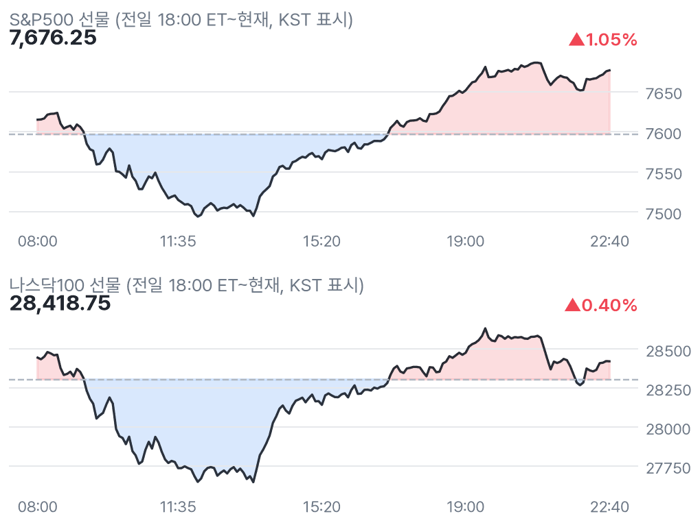
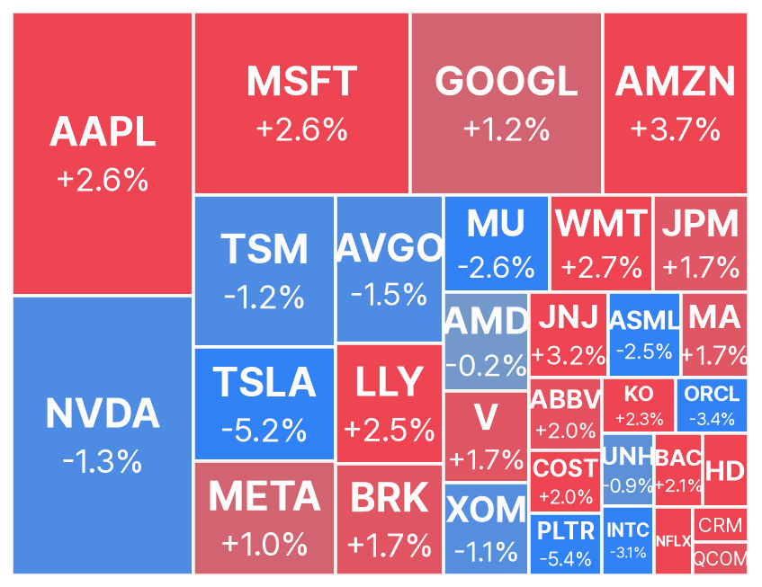
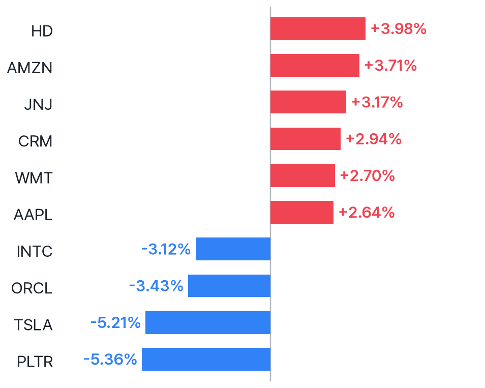
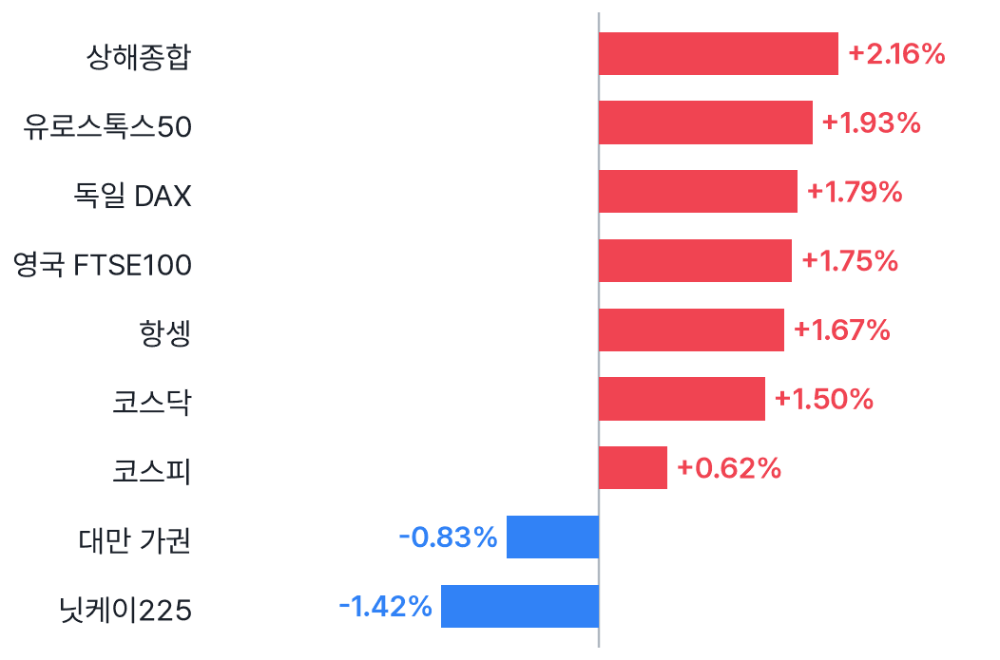
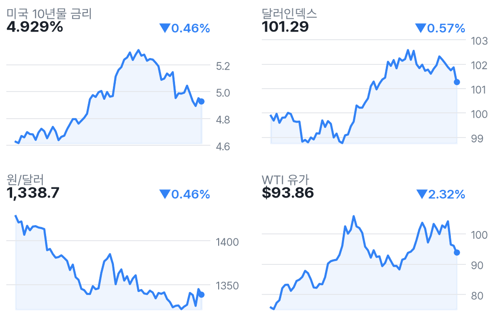

다우 선물 2.03%↑, 선거 불확실성 완화·AI주는 약세
✅ 핵심 요약
- 다우 선물 +2.03%·나스닥 +0.40%: 민주당 의회 장악 후 불확실성 완화.
- ADP 고용 +8.6만명, CNBC는 예상 소폭 상회 보도. 예상 수치는 확인되지 않음.
- 테슬라 -5.21%·엔비디아 -1.33%: 정치 리스크·AI 데이터센터 둔화 우려.
- 실적 발표 후 데이터독 -13.29%·CVS -4.63%. 지수 반등과 종목 반응은 차별화.
📊 주요 지표
S&P500 선물
7,676.25
▲1.05%
나스닥100 선물
28,418.75
▲0.40%
다우 선물
52,948
▲2.03%
러셀 선물
2,872.10
▲1.67%
VIX
18.43
▼11.52%
미국 10년물
4.929%
▼0.46%
달러인덱스
101.29
▼0.57%
원/달러
1,338.7
▼0.46%
WTI
$93.86
▼2.32%
금
$4,052
▲2.83%
비트코인
$78,267
▲1.19%
유로스톡스50
6,262.96
▲1.93%
🧭 시장 해석
민주당의 의회 장악 이후 선거 불확실성 완화가 선물 반등의 배경이라는 보도다. 다우 +2.03%에 비해 나스닥은 +0.40%에 그쳐, AI 데이터센터 개발 둔화 우려가 남은 업종별 차별화 장세로 해석된다.
달러인덱스 -0.57%·원/달러 1,338.7원은 국내 환율 부담 완화 요인으로 해석된다. 다만 엔비디아 -1.33%·마이크론 -2.59%여서 한국 반도체까지 동반 반등한다고 단정하기 어렵다. ADP는 예상 소폭 상회 보도이나 예상 수치, 이날 동부 08:30 지표 일정·실제치는 추가 확인하지 못했다.
선거 안도와 AI 규제 우려가 동시에 반영
수집된 CNBC 헤드라인은 선물 반등을 선거 불확실성 완화에 연결한다. 별도 보도에서는 텍사스 주지사 선거 결과에 따른 데이터센터 개발 둔화 우려를 지목했다. MarketWatch는 테슬라 약세를 머스크의 정치 행보 타격과 연결한다. 선거 결과가 곧바로 규제 시행을 뜻하는 것은 아니며, 업종별 정책 해석을 구분해야 한다.
고용은 소폭 상회 보도, 추가 지표 확인에는 한계
수집된 CNBC 헤드라인상 ADP 민간고용은 +8.6만명으로 예상 소폭 상회다. 추가 검색에서 예상 수치를 확인하지 못해 수치 비교는 보류했다. 동부 08:30 지표 일정·실제치도 추가 확인하지 못했으므로 지표 발표가 없었다는 뜻은 아니다. 데이터독 -13.29%는 실적 발표 후 하락이나, 낙폭 원인을 실적 부진으로 단정할 근거는 부족하다.
📈 차트
미국 지수 선물 야간 흐름

점선 = 전일 정산가
빅테크·대형주 프리마켓 히트맵

전일 종가 대비 프리마켓 현재가 · 타일 크기 = 시가총액
프리마켓 변동 상위 10 (대형주)

변동폭 절대값 기준
유럽(장중) · 아시아(마감) 증시

현지 기준 전일 대비
금리·달러·원화·유가 (3개월)

우측 상단 = 전일 대비
🏦 애널리스트 · 리서치
- AMD — DA Davidson 목표가 $550→$600 상향Buy 유지라는 의견. 목표가 상향과 수집 시점 프리마켓 -0.19%는 구분해서 볼 필요.
- AMD — Mizuho 목표가 $705→$610 하향Outperform 유지라는 의견. 투자의견 하향이 아니라 목표가 조정.
- AMD — Stifel 목표가 $700→$725 상향Buy 유지라는 의견. 같은 기업을 두고 목표가 조정 방향은 엇갈림.
- AMD — BofA 목표가 $720→$650 하향Buy 유지라는 의견. 낙관적 투자의견과 목표가 하향이 함께 나타남.
- AMZN — Freedom Broker 목표가 $255→$330 상향Buy 유지라는 의견. 이번 수집 목록에 포함된 전일 변경으로, 오늘 신규 변경과 구분.
미국 대형주 의견·목표가 변경 5건 (Yahoo)
- 목표가 상향AMD · DA DavidsonBuy · 목표가 $550 → $600 · 11/04 22:28 KST
- 목표가 하향AMD · MizuhoOutperform · 목표가 $705 → $610 · 11/04 21:26 KST
- 목표가 상향AMD · StifelBuy · 목표가 $700 → $725 · 11/04 20:51 KST
- 목표가 하향AMD · B of A SecuritiesBuy · 목표가 $720 → $650 · 11/04 20:28 KST
- 목표가 상향AMZN · Freedom BrokerBuy · 목표가 $255 → $330 · 11/04 04:59 KST
📰 주요 뉴스
-
선물 반등의 배경이지만 AI주까지 일괄 강세는 아님.CNBC
-
고용과 금리 기대 점검 재료. 예상 수치는 확인되지 않음.CNBC
-
데이터센터 개발 속도와 규제 부담 우려가 부각.CNBC
-
테슬라 -5.21%는 지수 강세와 다른 정치 리스크 반응.MarketWatch
-
프리마켓 -13.29%. 실적 발표와 주가 반응을 구분.MarketWatch
-
프리마켓 -4.63%. 실적과 사업 재편 평가가 교차.CNBC
미국·글로벌 헤드라인 18건
-
CNBC · 11/04 22:49
-
WSJ Markets · 11/04 22:49
-
CNBC · 11/04 22:46
-
CNBC · 11/04 22:45
-
CNBC · 11/04 22:43
-
MarketWatch · 11/04 22:41
-
CNBC · 11/04 22:33
-
CNBC · 11/04 22:32
-
MarketWatch · 11/04 22:32
-
CNBC · 11/04 22:31
-
CNBC · 11/04 22:30
-
MarketWatch · 11/04 22:29
-
CNBC · 11/04 22:24
-
CNBC · 11/04 22:24
-
CNBC Markets · 11/04 22:19
-
Yahoo Finance · 11/04 22:09
-
CNBC · 11/04 22:03
-
MarketWatch · 11/04 22:03
애널리스트 관련 헤드라인 12건
-
The Globe and Mail · 11/04 22:03
-
Benzinga · 11/04 21:48
-
Benzinga · 11/04 21:44
-
Benzinga · 11/04 21:39
-
TradingView · 11/04 19:20
-
TradingView · 11/04 19:20
-
TradingView · 11/04 19:20
-
TradingView · 11/04 19:20
-
TradingView · 11/04 19:20
-
TradingView · 11/04 19:20
-
TradingView · 11/04 19:20
-
TradingView · 11/04 19:20
국내 헤드라인 8건
-
톱스타뉴스 · 11/04 21:40
-
뉴스핌 · 11/04 21:19
-
한국경제 · 11/04 17:43
-
글로벌경제신문 · 11/04 16:27
-
네이버 프리미엄콘텐츠 · 11/04 16:14
-
SBS Biz · 11/04 16:10
-
머니투데이 · 11/04 15:13
-
PANews · 11/04 15:00
🗓️ 일정
경제지표·이벤트 (KST)
- 00:00🇺🇸 미국 ISM Services PMI11/05 · 중요도 중간 · 예상 54.8 · 이전 54.9
오늘 미국 실적 발표 (장전=발표 완료 · 장후=새벽)
- TM Toyota Motor Corp Ltd Ord시간미정시총 $255.2B · EPS 예상 -
- ARM Arm Holdings plc장후시총 $209.4B · EPS 예상 $0.22
- MCD McDonald's Corporation장전시총 $188.0B · EPS 예상 $3.36 · 시간외 ▲2.73%
- NVO Novo Nordisk A/S장전시총 $179.1B · EPS 예상 $0.81 · 시간외 ▲5.67%
- QCOM QUALCOMM Incorporated장후시총 $170.2B · EPS 예상 $1.46
- UBER Uber Technologies, Inc.장전시총 $136.3B · EPS 예상 $0.94 · 시간외 ▲0.30%
- MCK McKesson Corporation장후시총 $116.4B · EPS 예상 $10.69
- CVS CVS Health Corporation장전시총 $113.2B · EPS 예상 $1.62 · 시간외 ▼4.63%
- EMR Emerson Electric Company장전시총 $92.6B · EPS 예상 $1.85 · 시간외 ▼2.46%
- MELI MercadoLibre, Inc.장후시총 $85.0B · EPS 예상 $9.41
- MSI Motorola Solutions, Inc.장후시총 $80.6B · EPS 예상 $3.99
- DDOG Datadog, Inc.장전시총 $77.6B · EPS 예상 $0.18 · 시간외 ▼13.29%
- APP Applovin Corporation장후시총 $76.6B · EPS 예상 $3.94
- MFC Manulife Financial Corp장후시총 $74.8B · EPS 예상 $0.83
👀 체크포인트
- 발표치 확인동부 08:30 지표 일정·실제치 추가 확인 불가: 서프라이즈 판단 보류
- 23:30미국 정규장 개장: 다우 우위 지속·반도체 낙폭 축소 여부
- 11/05 00:00미국 ISM 서비스업 PMI: 예상 54.8 / 이전 54.9
- 미국 장후ARM·QCOM·APP·MELI 실적: AI·소비 관련 전망 확인